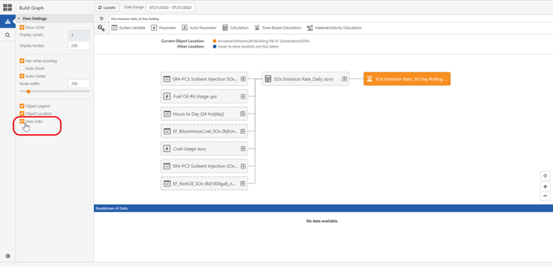
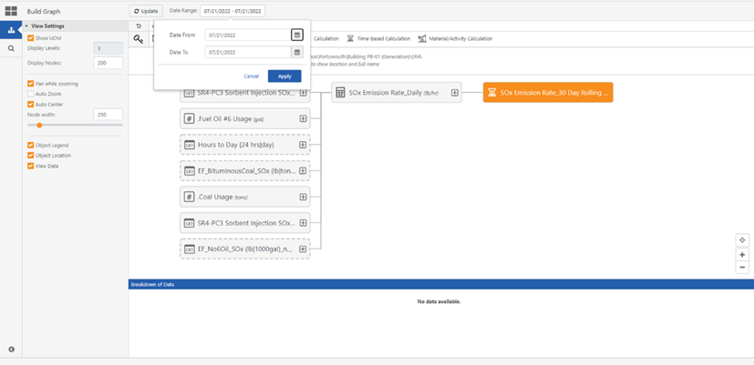
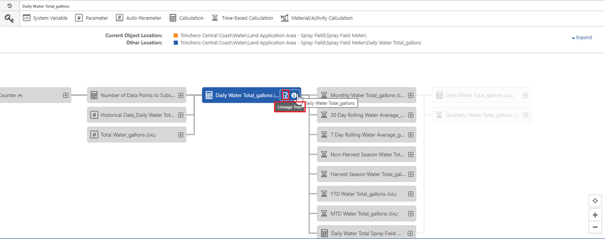

Exporting a Data Lineage Tree for a Requirement
In the Calc Graph Visualizer, users can export data for a requirement into an excel document.
To Export a Data Lineage Tree for a Requirement
- On the Calc Graph Visualizer window, click the Build Graph tab.
- Under View Settings, click the View Data Checkbox.

- On the header of the Calc Graph Visualizer window, click the Date Range icon.
The Date Range selector allows users to observe the history of calculations, and any changes in formulas within the selected date range.

- On the Data Range window click the Date From, and Date To drop down list, and select dates.
- Click Apply.
- The date range is updated, and the Date Range window closes.
- Hover over the requirement of interest.
The Lineage Tree icon appears.

- Click the Download icon.
An excel document downloads tracing a particular calculated value back to its source in combination with important metadata.